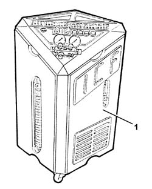
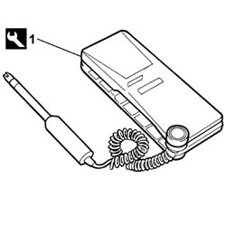

5040A14 air conditioner cooling circuit - check and repair any leaks by tightening fittings
- Path
- Procedures > 50 AUXILIARY UNITS > 5040 AIR CONDITIONING CASING AND COMPONENTS > 5040A air conditioner coolant circuit > 5040A14 air conditioner cooling circuit - check and repair any leaks by tightening fittings
- Kind
- repair procedure (removal / refitting; the operation number is the code)
- Applies to
- all engines; all production periods
- Interactive page
- https://sloeber94.github.io/elrnDB-fDbl/en/#/2584820
Applies to: all engines; all production periods
Applies to: all engines; all production periods
1. Use the special Cleaner 134 draining/repressurizing equipment.

Applies to: all engines; all production periods
Introduce a certain amount of R134a coolant fluid into the system.
1. Use a leak detector to identify the area where the leak is coming from.
 | Name | Country |
|---|---|---|
1 | Halogen gas (Freon leak detector) | 1.806.138.000 |

Applies to: all engines; all production periods
Drain the fluid and eliminate the leak, tightening any slack connectors or replacing any damaged pipes or components.
Op. 5040A10 AIR CONDITIONING REFRIGERANT CIRCUIT - DRYING AND REPRESSURIZING